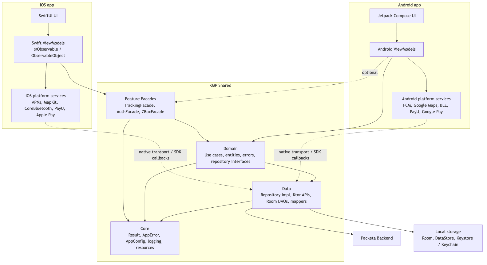
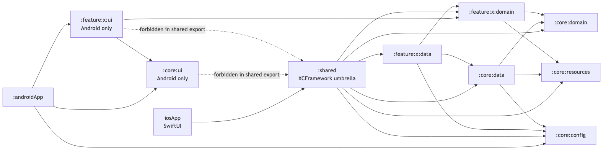
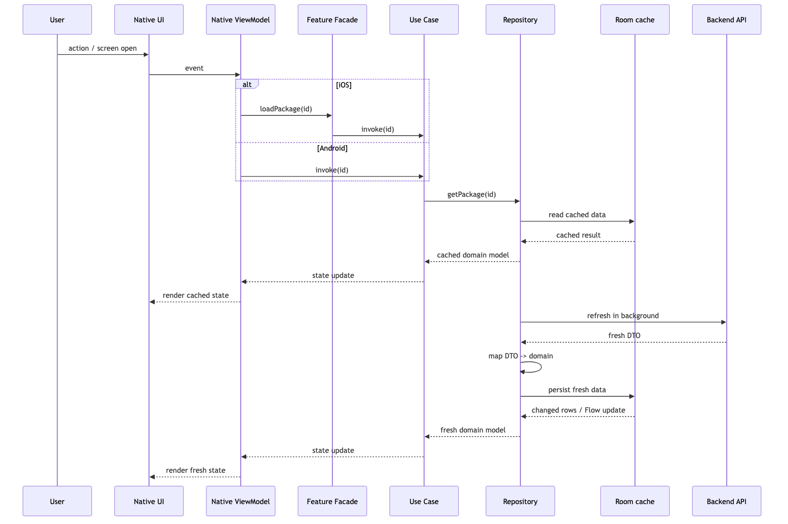
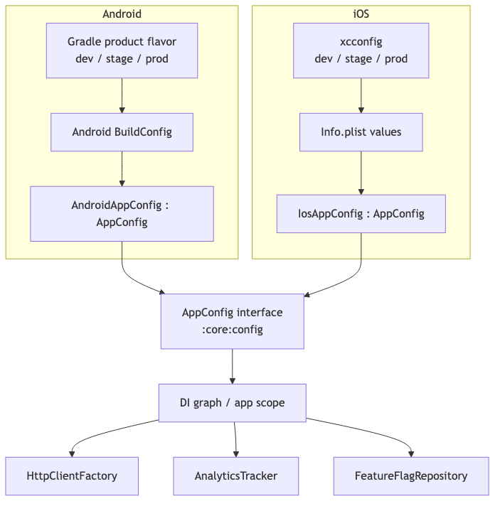
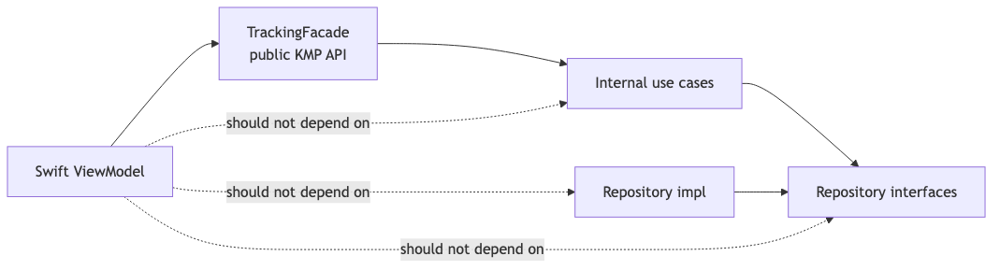
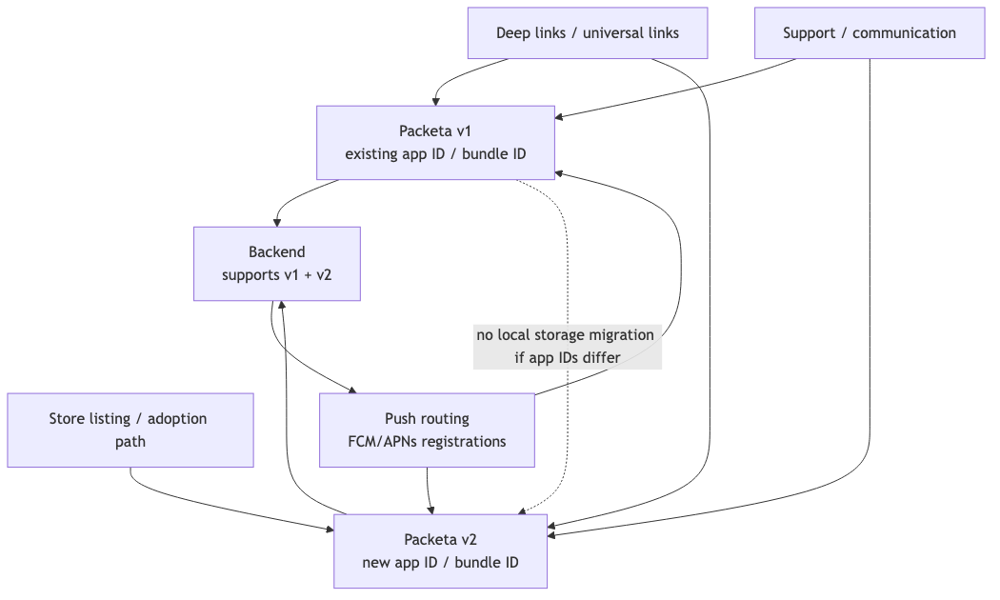
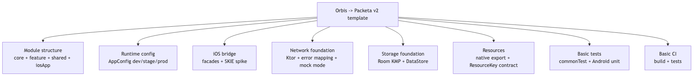
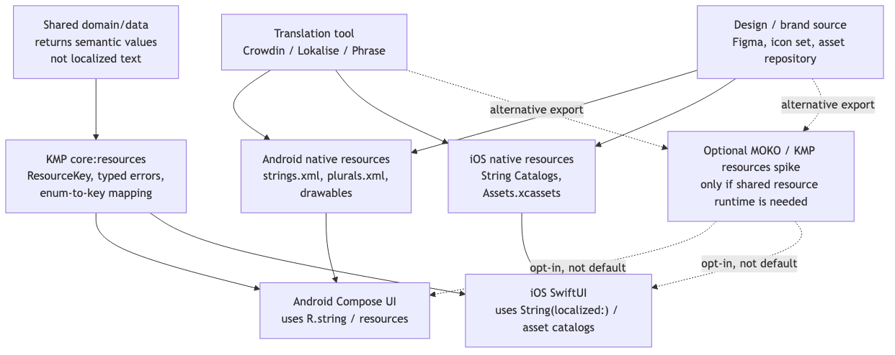

1. High-level Architecture
Shows the main ownership boundary. Android and iOS own native UI, ViewModels, navigation, and platform SDK integrations. KMP owns feature facades, domain rules, data access, caching, error mapping, and common contracts.
The main point: share business/data behavior, not presentation or platform SDK runtime.

2. Module Dependency Graph
Shows compile-time module dependencies. Android uses Android-only UI modules, while iOS consumes only the :shared umbrella framework.
The main point: KMP domain/data modules can be exported to iOS; Compose UI modules must stay Android-only.

3. Runtime Data Flow
Shows a typical cache-first read flow. The native screen calls a native ViewModel, iOS goes through a facade, the use case calls a repository, cached data renders first, then backend refresh updates the state.
Payments, auth, and Z-Box open are exceptions because they require stricter online/backend/device confirmation.

4. Environment / Config Flow
Shows how dev/stage/prod values enter shared code. Android reads Gradle/BuildConfig values, iOS reads xcconfig/Info.plist values, and both adapt them into the same AppConfig contract.
The main point: shared KMP modules do not own flavors and do not hardcode environment values.

5. iOS Public API Boundary
Shows what Swift code is allowed to call. Swift ViewModels depend on feature facades, not internal use cases, repository interfaces, or data implementations.
The facade is a stable Swift-facing API boundary, not a shared ViewModel.

6. v1 -> v2 Transition
Shows why v1 -> v2 is not a local database migration if v2 has a new app ID / bundle ID. The OS treats v2 as a separate app, so v1 local storage and tokens are not visible.
The transition needs backend coexistence, fresh login, store adoption path, push routing, deep-link routing, and support communication.

7. First Template Scope
Shows what the first Orbis-based template should prove: module structure, build wiring, runtime config, iOS bridge, networking, storage, resource contracts, tests, and basic CI.
Payments, BLE, full release readiness, and complete security review are documented separately and are outside the first onboarding/auth foundation.

8. Resources / Localization Workflow
Shows the proposed default for strings, plurals, icons, and image assets. Translation tooling exports native Android and iOS resources. Design/brand source exports platform-native visual assets.
KMP returns semantic values such as typed errors, enums, or resource keys. Android and iOS map those values to native resources. MOKO is shown as an opt-in alternative only if shared KMP resource runtime is required.
